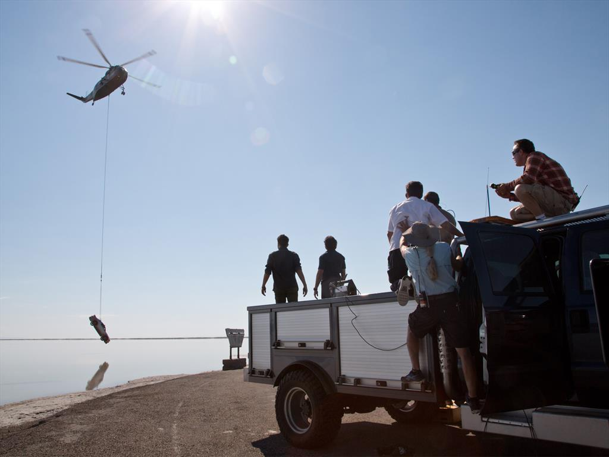
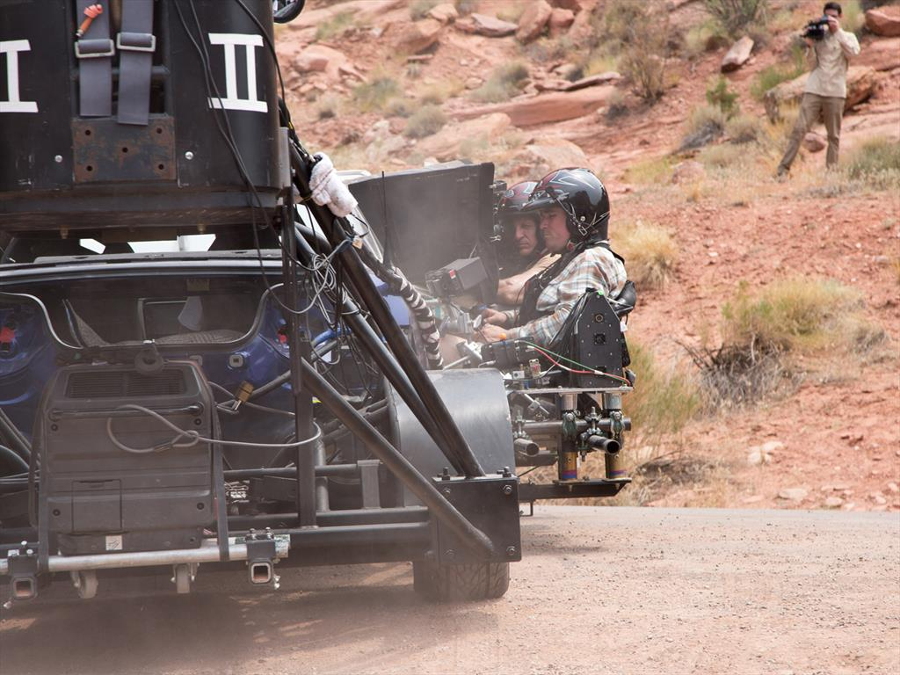
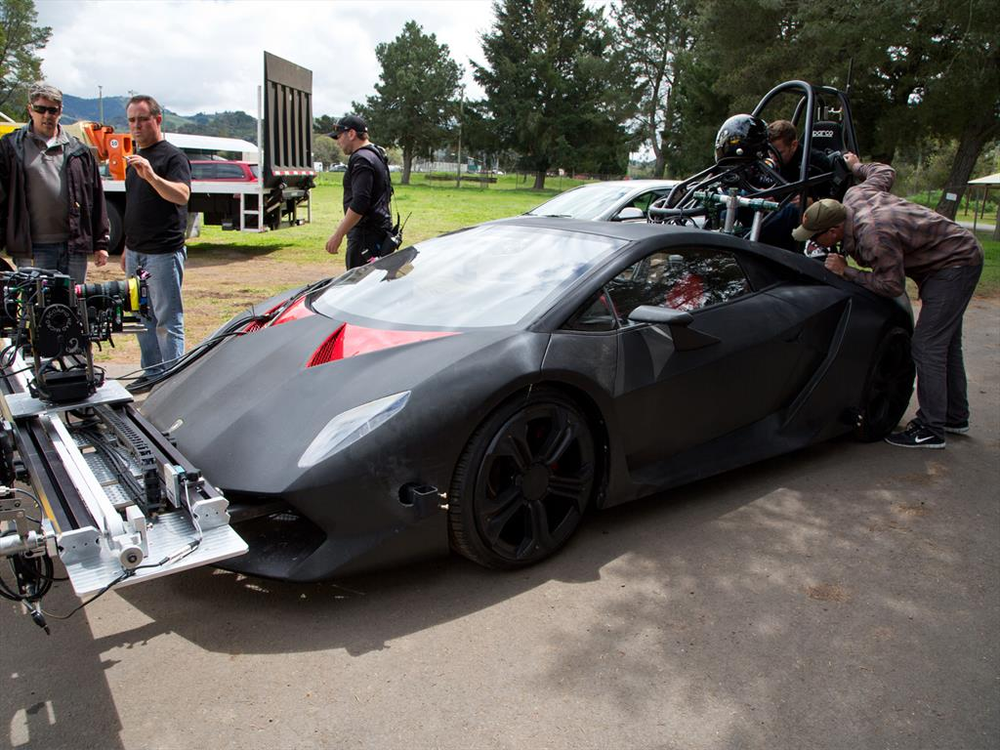

Estudios y producción
La película Need for Speed fue producida por DreamWorks Pictures en colaboración con Reliance Entertainment. La distribución estuvo a cargo de Walt Disney Studios Motion Pictures, lo que permitió que la película tuviera un gran alcance a nivel internacional. Aunque se utilizaron estudios de grabación para algunas escenas específicas, gran parte de la película fue filmada en locaciones reales. Esto se hizo con el objetivo de lograr un estilo más auténtico y realista, especialmente en las escenas de carreras.
Procesos de filmación
Uno de los aspectos más destacados de Need for Speed es que muchas de las escenas de autos fueron realizadas con vehículos reales, en lugar de depender completamente de efectos especiales por computadora. Esto permitió que las persecuciones se vieran más creíbles y emocionantes. Los actores, en especial Aaron Paul, participaron en varias escenas dentro de los autos, aunque en las tomas más peligrosas se utilizaron conductores profesionales especializados en acrobacias. Además, se utilizaron cámaras montadas directamente en los vehículos para capturar la velocidad y la intensidad de las carreras desde diferentes ángulos, lo que aporta una mayor sensación de realismo al espectador. Otro dato interesante es que la producción evitó el uso excesivo de pantallas verdes (green screen), apostando por efectos prácticos y escenarios reales, algo poco común en muchas películas modernas de acción.


